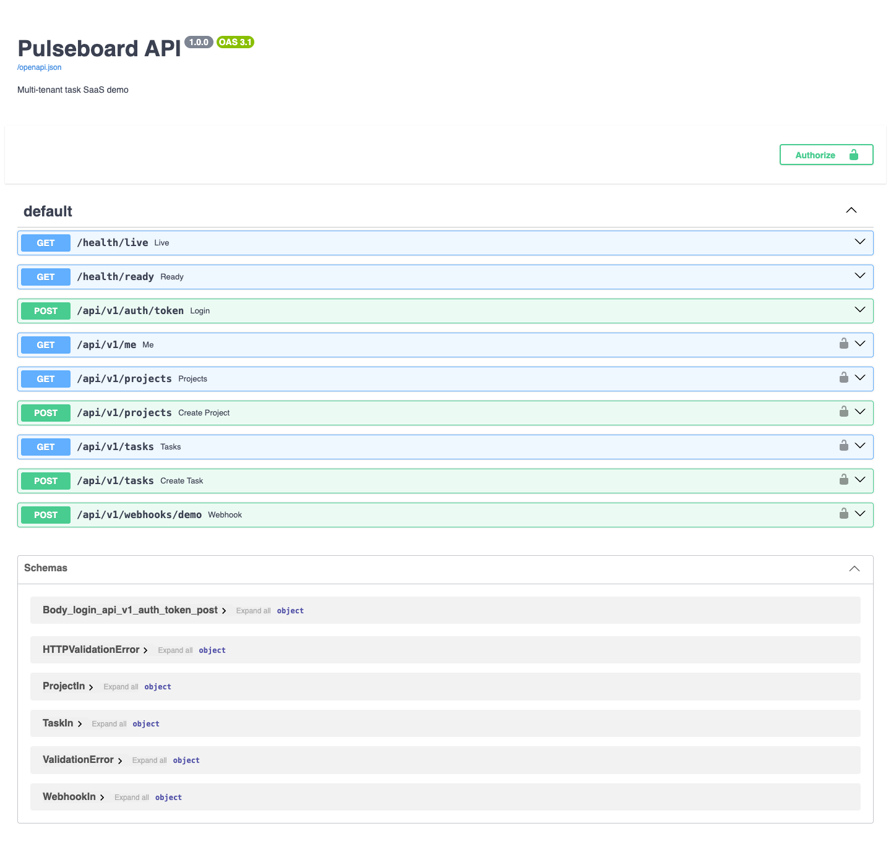
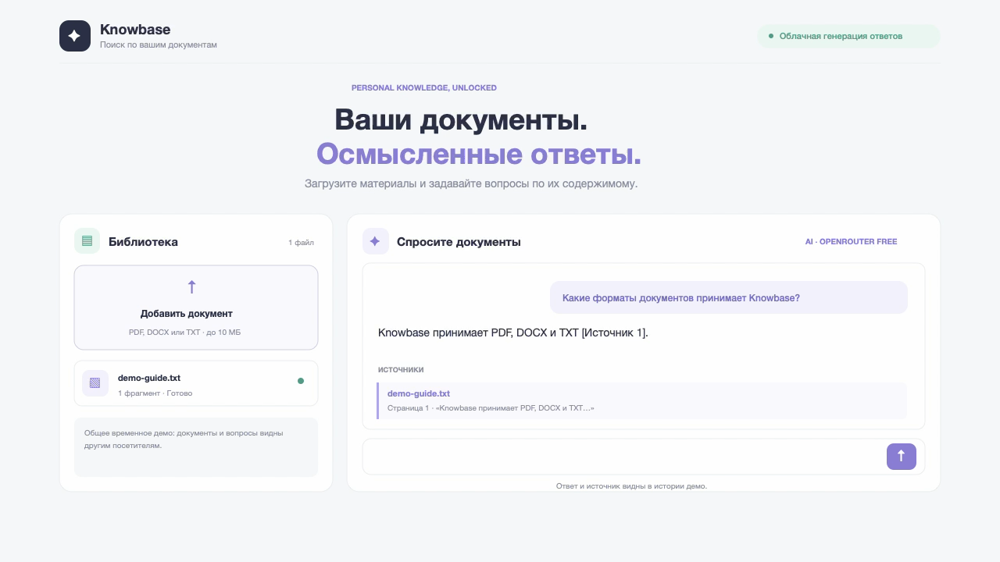

Командные проекты и задачи · интерактивное демо01

Pulseboard
Небольшой команде нужно знать, кто над чем работает и что уже готово. Pulseboard собирает проекты и задачи в одном месте.
FastAPI / PostgreSQL / SQLAlchemy / Redis / Celery
Что показывает проект ↗
API демонстрирует вход по JWT, разграничение ролей и данных команд, управление проектами и задачами, идемпотентные вебхуки, фоновые задачи и события.
Интерактивная доска подключена к API и использует отдельные временные сессии посетителей. Бесплатный сервис может засыпать и очищать демо-данные при перезапуске.
Поиск ответов в документах · публичное демо02

Knowledge Assistant
Задайте вопрос по встроенному примеру и получите ответ с цитатой. Полная загрузка файлов доступна в собственной установке.
FastAPI / React / RAG / OpenRouter / цитаты по источникам
Как проверить демо за минуту
- Откройте помощника по кнопке выше.
- Задайте вопрос по встроенному примеру
demo-guide.txt и проверьте ответ, цитату, имя файла и страницу.
Публичное демо доступно только для чтения: загрузка файлов и сохранение вопросов отключены. Загрузка PDF, DOCX и TXT работает в собственной доверенной установке. Бесплатный AI-маршрут зависит от доступности моделей и квот.
Что показывает проект ↗
FastAPI обрабатывает PDF, DOCX и TXT, разбивает документы на фрагменты и возвращает найденные источники. Публичное облачное демо использует только встроенный пример, не принимает файлы и не сохраняет вопросы.
Страница и API доступны онлайн без установки. Для локальной разработки предусмотрен профиль с Qdrant и Ollama.
AI и обработка данных03
AI News RSS Bot
Собирает публикации из RSS, убирает смысловые дубликаты и группирует похожие новости перед отправкой в Telegram.
Python / Ollama / Embeddings / PostgreSQL
Исходный код ↗
Telegram Mini App04
Socialera
MVP для заказов услуг: каталог, баланс, история операций, рефералы и административные сценарии.
Telegram Mini App / API / Database
Исходный код ↗
Мониторинг оборудования · в разработке05
City Sentinel
Backend собирает телеметрию от оборудования и помогает отслеживать события и отклонения.
FastAPI / PostgreSQL / InfluxDB / MQTT
Открыть демо ↗
Оплата и интеграции06
Платёжный сценарий для магазина
Интеграция Tilda, Т-Банка и АТОЛ Онлайн с проверкой статусов платежа и фискализации. Работа принята заказчиком.
Payments / Webhooks / API